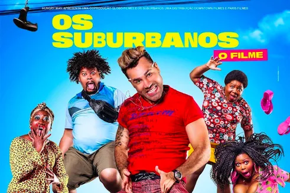

Arlete (Camila Queiroz), uma jovem do interior de São Paulo, chega à capital com um sonho: ser modelo.
Ela conhece Visky (Rainer Cadete), um booker que se encanta por ela e a convida para o casting da agência comandada por Fanny Richard (Marieta Severo).
O novo trabalho vem a calhar: Arlete e a mãe, Carolina (Drica Moraes), vão morar com a avó, Hilda (Ana Lúcia Torre), mas as coisas não andam nada bem.
Arlete até consegue uma bolsa para estudar em um colégio caro, mas falta dinheiro para coisas básicas, como a conta de condomínio.
Ela só pensa em ajudar em casa.
Justamente por isso, Carolina aceita que a filha modele.
Essa ideia nunca foi muito bem recebida por ela, uma mulher simples e dedicada à família.
Carolina abriu mão dos estudos muito cedo e nunca teve uma carreira, futuro que não planeja para Arlete.
Dona Graça (Rodrigo Sant'anna) é uma mulher bem humorada que trabalha como catadora de latinhas no Rio de Janeiro.
Graça é a única provedora de casa, onde mora com o marido desempregado e sete de quatorze filhos.
No entanto, mesmo suprindo as necessidades da família com o dinheiro suado que ganha, ela ainda precisa lidar com as confusões em que os filhos se metem.
No convívio diário de Dona Graça estão o marido Moacir, que vive às suas custas,
a filha Sara Jane, uma barraqueira, Miqui Jegue, criativo e sempre em busca de dinheiro, Marraia Karen, esteticista, Briti Sprite, uma adolescente rebelde, Maico, um jovem perdido na vida, Pablo, ex-presidiário e Shubakira, a caçula do grupo. A vizinhança é cheia de presenças ilustres que agitam o cotidiano da família, como a amiga Geralda, o dono do bar Canário, a ex-patroa Abigail, Cráudio, Suellen e Sonaira, sobrinha de Geralda que passa a viver na casa de Graça depois de se aproximar de uma de suas filhas.
Selminha (Samantha Schmütz) é uma frentista que tem a chance de deixar seus dias de pobreza para trás ao descobrir uma herança de família.
Mas para conseguir colocar a mão nessa grana, ela terá que cumprir o desafio lançado por seu tio: precisa gastar R$ 30 milhões em 30 dias,
sem acumular nada e nem contar para ninguém. Mas, nessa louca maratona, ela vai acabar descobrindo que tem coisas que o dinheiro não compra.

Jeferson (Rodrigo Sant’anna) é um motorista de kombi apaixonado por pagode.
Um dia, ele tem uma premonição durante um sonho e escreve a música “Xavasca Guerreira”. Com a ajuda de seu primo Welinto (Babu Santana)
e de alguns amigos, ele grava um clipe amador no Parque de Madureira.
O que ele não esperava é que o vídeo ia se tornar um sucesso na internet, transformando-o em Jefinho do Pagode.
Agora, ele vai ter que lidar com a fama e a inveja.